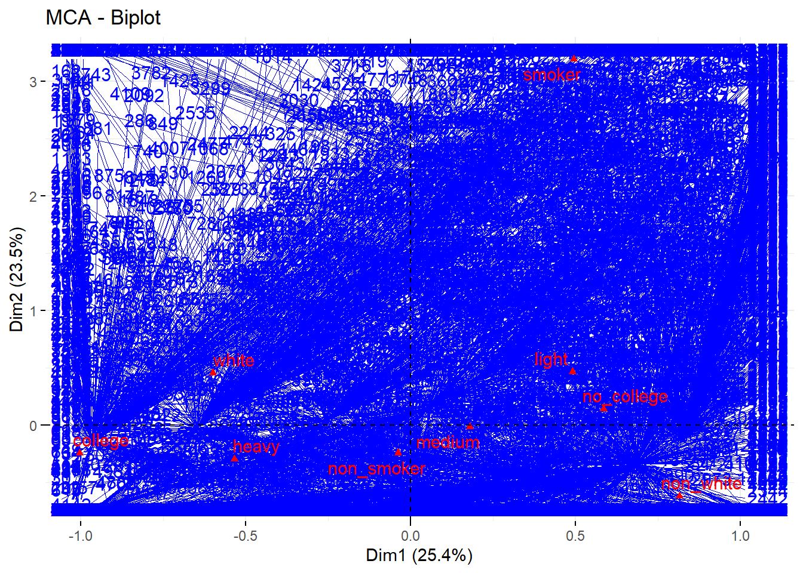
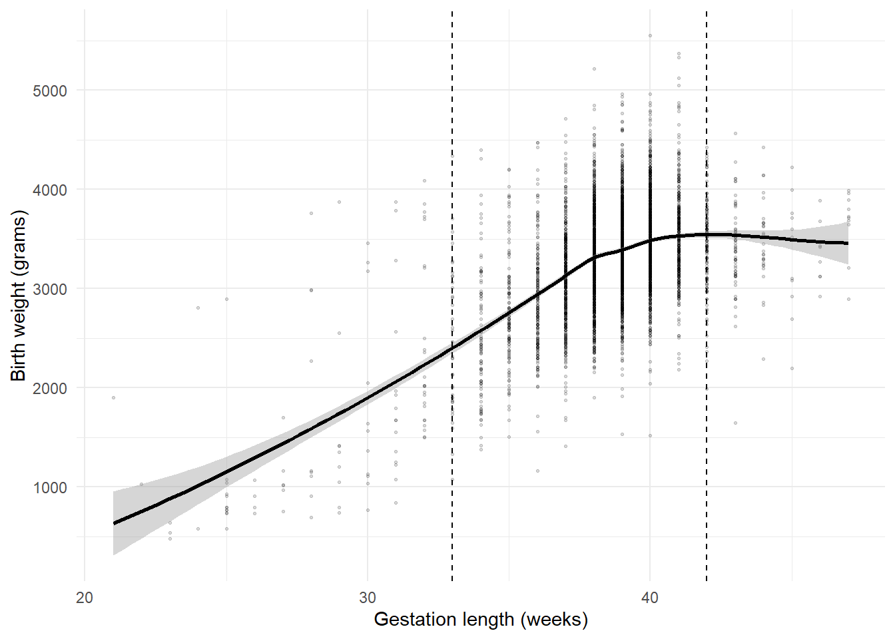
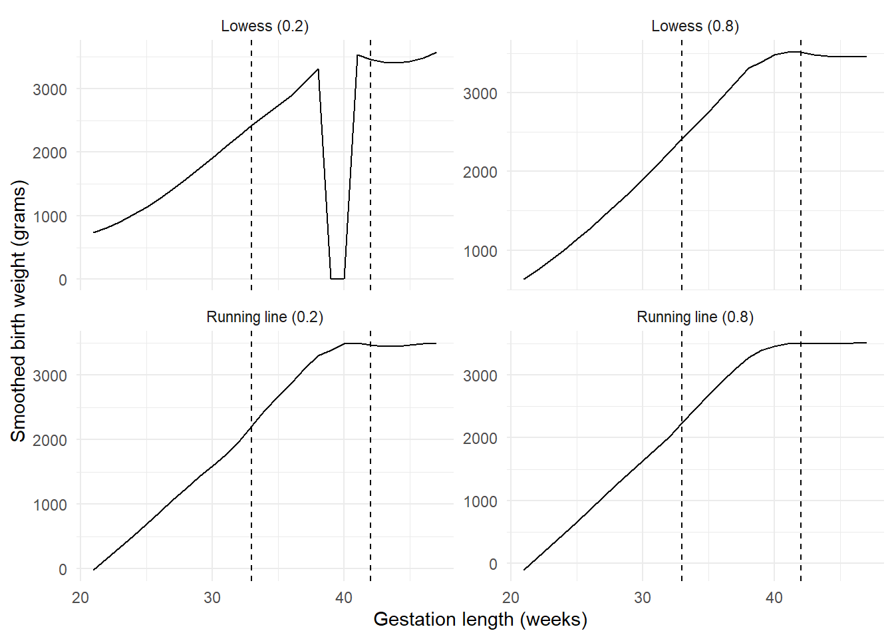
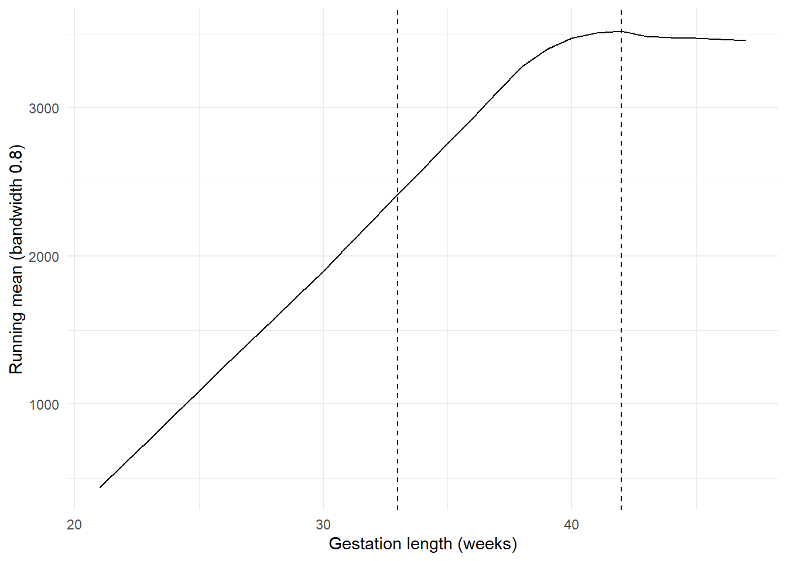
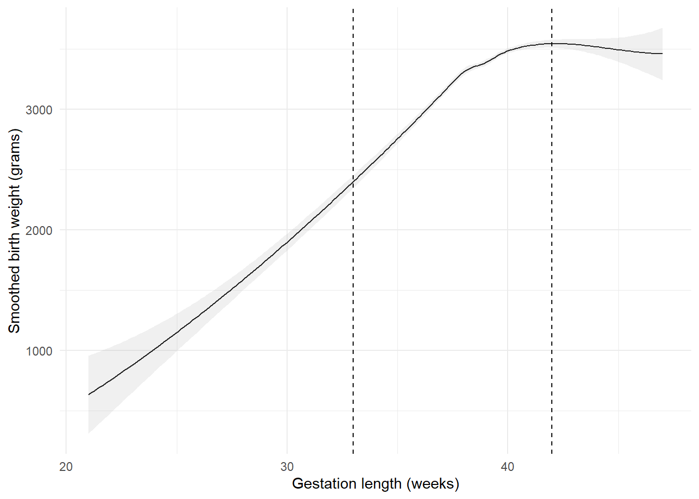
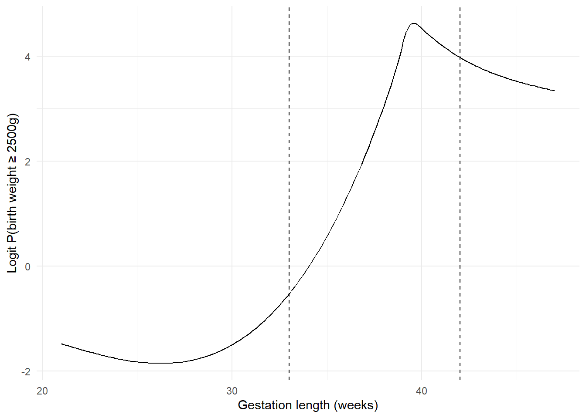
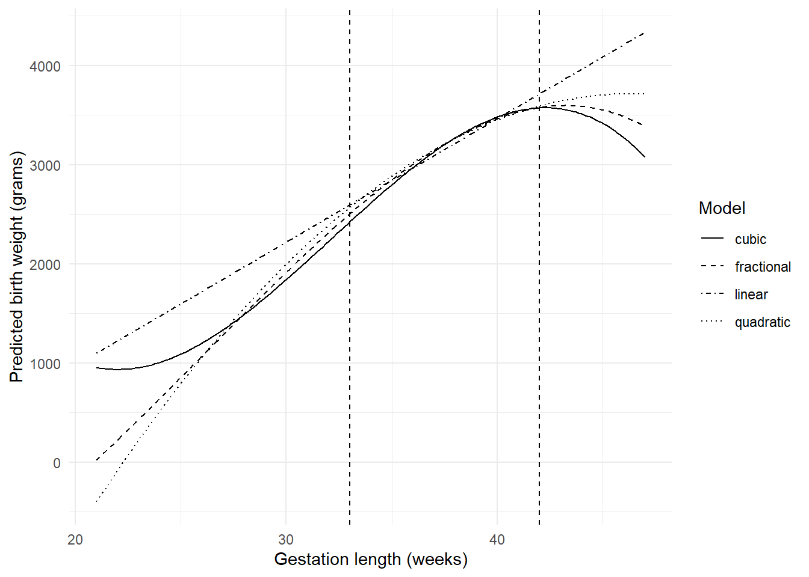
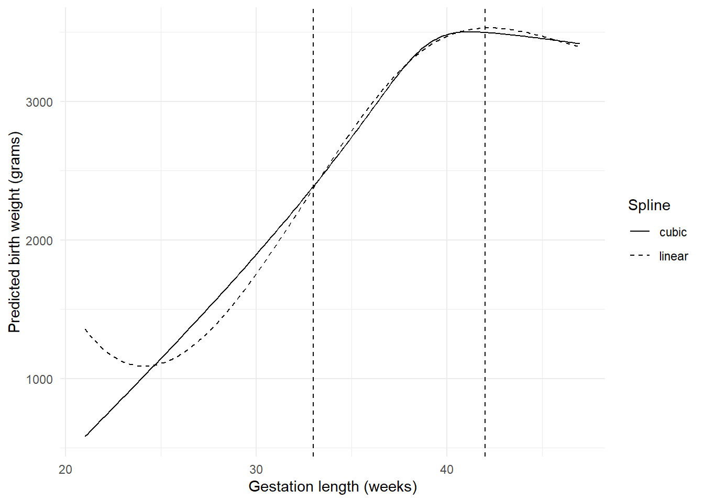

library(dplyr)
library(tidyr)
library(haven)
library(forcats)
library(ggplot2)
library(psych)
library(FactoMineR)
library(factoextra)
library(broom)
library(purrr)
library(glue)
library(MASS)
library(leaps)
library(lmtest)
library(splines)
library(mfp)
set.seed(45678)
data_dir <- file.path("..", "mer_data_stata")
bw5k <- read_dta(file.path(data_dir, "bw5k.dta")) |>
mutate(across(where(haven::is.labelled), haven::as_factor))11 SME Chapter 10: Model Building
Note
This chapter reproduces and expands upon the analyses from the original Methods in Epidemiologic Research (MER) Chapter 15 (Dohoo, Martin, & Stryhn, 2012) using R with data sourced from ../mer_data_stata/bw5k.dta. The chapter covers model building strategies - essential skills for developing appropriate statistical models.
11.1 Replication Notes
- Data dependencies:
../mer_data_stata/bw5k.dta. - Required R packages:
dplyr,tidyr,haven,forcats,ggplot2,psych,FactoMineR,factoextra,broom,purrr,glue,MASS,leaps,lmtest,splines,mfp. - Setup tips: Install packages with
install.packages(c("dplyr","tidyr","haven","forcats","ggplot2","psych","FactoMineR","factoextra","broom","purrr","glue","MASS","leaps","lmtest","splines","mfp")). - Execution: Run the notebook sequentially; all model-selection and validation steps are recomputed from the raw dataset.
11.2 Theoretical Background
Understanding Model Building
Before we build models, let’s understand the principles and strategies behind good model building. Model building is a critical skill in epidemiological research (Dohoo, Martin, & Stryhn, 2012; Kirkwood & Sterne, 2003):
11.2.1 What is Model Building?
Model building is the process of finding the best statistical model for your data. It’s like finding the right tool for the job - you want a model that: - Fits your data well - Is not too simple (missing important relationships) - Is not too complex (overfitting to noise)
11.2.2 The Bias-Variance Tradeoff
Bias: How far off your model is on average (like always guessing too high) Variance: How much your model’s predictions vary (like being inconsistent)
The tradeoff: - Simple models: Low variance but high bias (consistent but wrong) - Complex models: Low bias but high variance (right on average but inconsistent)
The goal: Find the sweet spot - a model that’s complex enough to capture real patterns but simple enough to be reliable.
11.2.3 Model Building Strategies
11.2.4 1. Forward Selection
Start with no predictors, then add them one by one, keeping the ones that improve the model. Like building a house brick by brick.
11.2.5 2. Backward Elimination
Start with all predictors, then remove them one by one, keeping the ones that matter. Like removing unnecessary parts from a machine.
11.2.6 3. Stepwise Selection
Combine forward and backward - add predictors, but also remove ones that become unnecessary. Like constantly refining your model.
11.2.7 4. Information Criteria
AIC (Akaike Information Criterion) and BIC (Bayesian Information Criterion) balance model fit with complexity: - Lower is better - They penalize complex models - Help you choose between models
11.2.8 Key Concepts
11.2.9 1. Model Assumptions
Every model makes assumptions. We need to check: - Linearity: Is the relationship a straight line? - Normality: Are errors normally distributed? - Independence: Are observations independent? - Homoscedasticity: Is variance constant?
11.2.10 2. Model Diagnostics
We check if our model is good by looking at: - Residuals: Should be random (no patterns) - Influence: Are some observations driving the results? - Fit statistics: R-squared, AIC, BIC
11.2.11 3. Transformations
Sometimes we transform variables to meet assumptions: - Log transformation: For skewed data or multiplicative relationships - Polynomials: For curved relationships - Splines: For flexible curves
11.2.12 4. Variable Selection
We want to include: - Variables that matter (statistically and practically) - Variables that improve predictions - Not too many variables (avoid overfitting)
11.2.13 Common Pitfalls
- Overfitting: Model fits the data too well but won’t work for new data (like memorizing answers instead of learning)
- Underfitting: Model is too simple and misses important relationships
- Data dredging: Trying many models until you find significant results (like fishing for significance)
- Ignoring assumptions: Using a model when assumptions aren’t met
11.2.14 The Model Building Process
- Exploratory analysis: Understand your data first
- Start simple: Begin with a basic model
- Add complexity gradually: Add predictors or transformations as needed
- Check assumptions: Make sure your model is valid
- Compare models: Use AIC/BIC to choose the best one
- Validate: Test on new data if possible
In simple terms: Model building is finding the right balance between simplicity and complexity. Too simple and you miss important patterns. Too complex and you fit noise instead of signal. We use strategies like stepwise selection and information criteria (AIC/BIC) to find the best model. The goal is a model that fits well, makes sense, and will work for new data.
11.3 Setup
What is this section doing?
This section loads tools and data for model building. Think of it like getting your workshop ready:
- Loading libraries: Getting all the R packages we need for analysis
- Reading data: Opening the birth weight dataset
- Setting random seed: Making sure our results are reproducible (like using the same starting point each time)
In simple terms: We’re getting everything ready to build and compare different statistical models to find the best one for our data.
11.4 Exercise 15.1: Cronbach’s Alpha
What is this section doing?
This section measures how consistent multiple questions are when they’re supposed to measure the same thing. Think of it like checking if three different questions about smoking all give similar answers:
- Cronbach’s Alpha: A number between 0 and 1 that tells us how well questions agree with each other
- High alpha (close to 1): The questions are measuring the same thing consistently (like three thermometers all giving similar temperatures)
- Low alpha (close to 0): The questions don’t agree well (like three thermometers giving very different readings)
In simple terms: We’re checking if multiple questions about smoking are consistent with each other. If they are, we can combine them into a single score. If not, we might need to fix the questions.
cig_items <- bw5k |> dplyr::select(cig_1, cig_2, cig_3)
alpha_raw <- psych::alpha(cig_items)
alpha_std <- psych::alpha(scale(cig_items), check.keys = FALSE)
cig_scores <- cig_items |>
mutate(
cig_avg = rowMeans(cig_items, na.rm = TRUE),
cig_std = alpha_std$scores
)
list(
alpha_raw = alpha_raw$total$raw_alpha,
alpha_standardized = alpha_std$total$std.alpha,
correlation = cor(cig_scores$cig_avg, cig_scores$cig_std, use = "complete.obs")
)$alpha_raw
[1] 0.9504454
$alpha_standardized
[1] 0.9599791
$correlation
[1] 0.999505911.5 Exercise 15.2: Multiple Correspondence Analysis
What is this section doing?
This section finds patterns and relationships between multiple categorical variables. Think of it like finding which characteristics tend to go together:
- Multiple Correspondence Analysis (MCA): A way to visualize relationships between many categorical variables (like birth weight category, race, education, smoking)
- Biplot: A graph showing which variables are related (variables close together are related)
- Patterns: Helps us see if certain combinations are common (like “white, college-educated, non-smoker” or “non-white, no college, smoker”)
In simple terms: We’re creating a map that shows which characteristics tend to appear together. This helps us understand patterns in our data and can guide which variables to include in our models.
bw5k_mca <- bw5k |>
mutate(
bwt_c3 = cut(bwt, breaks = c(0, 3000, 3500, Inf), labels = c("light", "medium", "heavy")),
white = fct_recode(mrace_c3, white = "white", non_white = "other", non_white = "black", non_white = "hisp"),
white = fct_relevel(white, "non_white"),
college = if_else(meduc_c4 %in% c("univ deg", "post grad"), "college", "no_college"),
college = factor(college),
smk = if_else(cig_2 > 0, "smoker", "non_smoker"),
smk = factor(smk)
)
bw5k_mca <- bw5k_mca[, c("bwt_c3", "white", "college", "smk")]
bw5k_mca <- tidyr::drop_na(bw5k_mca)
mca_fit <- MCA(bw5k_mca, graph = FALSE)
fviz_mca_biplot(mca_fit, repel = TRUE, ggtheme = theme_minimal())
tab_college_smk <- bw5k_mca |> count(college, smk) |> group_by(college) |> mutate(prop = n / sum(n))
tab_white_college <- bw5k_mca |> count(white, college) |> group_by(white) |> mutate(prop = n / sum(n))
list(
college_vs_smoking = tab_college_smk,
white_vs_college = tab_white_college
)$college_vs_smoking
# A tibble: 4 × 4
# Groups: college [2]
college smk n prop
<fct> <fct> <int> <dbl>
1 college non_smoker 1810 0.984
2 college smoker 30 0.0163
3 no_college non_smoker 2839 0.898
4 no_college smoker 321 0.102
$white_vs_college
# A tibble: 4 × 4
# Groups: white [2]
white college n prop
<fct> <fct> <int> <dbl>
1 non_white college 505 0.238
2 non_white no_college 1615 0.762
3 white college 1335 0.464
4 white no_college 1545 0.53611.6 Section 15.6: Smoothers for Gestation vs Birth Weight
What is this section doing?
This section explores different ways to model the relationship between gestation length and birth weight. Think of it like trying different ways to draw a curve through data points:
- Smoothers: Flexible curves that follow the data (like drawing a smooth line through a scatter plot)
- Categorization: Breaking gestation into groups (like “early”, “normal”, “late”)
- Polynomials: Using mathematical curves (like U-shapes or S-shapes)
- Splines: Flexible curves that can bend at specific points
In simple terms: We’re trying different ways to describe how birth weight changes with gestation length. Some relationships might be straight lines, others might be curves. We want to find the best way to describe the pattern.
gest_quantiles <- quantile(bw5k$gest, probs = c(0.025, 0.975), na.rm = TRUE)
ggplot(bw5k, aes(x = gest, y = bwt)) +
geom_point(alpha = 0.15, size = 0.5) +
geom_smooth(method = "loess", span = 0.8, colour = "black") +
geom_vline(xintercept = gest_quantiles, linetype = "dashed") +
labs(x = "Gestation length (weeks)", y = "Birth weight (grams)") +
theme_minimal()
build_smoother <- function(span = 0.8, method = c("loess", "lm")) {
method <- match.arg(method)
smoother <- if (method == "loess") {
loess(bwt ~ gest, data = bw5k, span = span, surface = "direct")
} else {
stats::lowess(bw5k$gest, bw5k$bwt, f = span)
}
tibble(
gest = if (method == "loess") smoother$x else smoother$x,
bwt_hat = if (method == "loess") smoother$fitted else smoother$y,
span = span,
method = method
)
}
smoother_df <- bind_rows(
build_smoother(span = 0.8, method = "loess") |> mutate(label = "Lowess (0.8)"),
build_smoother(span = 0.8, method = "lm") |> mutate(label = "Running line (0.8)"),
build_smoother(span = 0.2, method = "loess") |> mutate(label = "Lowess (0.2)"),
build_smoother(span = 0.2, method = "lm") |> mutate(label = "Running line (0.2)")
)
ggplot(smoother_df, aes(x = gest, y = bwt_hat)) +
geom_line(colour = "black") +
facet_wrap(~label, ncol = 2, scales = "free_y") +
geom_vline(xintercept = gest_quantiles, linetype = "dashed") +
labs(x = "Gestation length (weeks)", y = "Smoothed birth weight (grams)") +
theme_minimal()
running_mean <- stats::lowess(bw5k$gest, bw5k$bwt, f = 0.8, iter = 0, delta = 0)
tibble(gest = running_mean$x, bwt_hat = running_mean$y) |>
ggplot(aes(x = gest, y = bwt_hat)) +
geom_line(colour = "black") +
geom_vline(xintercept = gest_quantiles, linetype = "dashed") +
labs(x = "Gestation length (weeks)", y = "Running mean (bandwidth 0.8)") +
theme_minimal()
loess_fit <- loess(bwt ~ gest, data = bw5k, span = 0.8)
pred_grid <- tibble(gest = seq(min(bw5k$gest), max(bw5k$gest), length.out = 200))
loess_pred <- predict(loess_fit, newdata = pred_grid, se = TRUE)
ci_df <- pred_grid |>
mutate(
fit = loess_pred$fit,
se = loess_pred$se.fit,
upper = fit + 1.96 * se,
lower = fit - 1.96 * se
)
ggplot(ci_df, aes(x = gest, y = fit)) +
geom_line(colour = "black") +
geom_ribbon(aes(ymin = lower, ymax = upper), alpha = 0.2, fill = "grey70") +
geom_vline(xintercept = gest_quantiles, linetype = "dashed") +
labs(x = "Gestation length (weeks)", y = "Smoothed birth weight (grams)") +
theme_minimal()
11.7 Logistic Scale Smoother
bw5k <- bw5k |>
mutate(bwt_c2 = if_else(bwt >= 2500, 1, 0))
# Logistic smoother via glm with natural spline
logit_loess <- glm(bwt_c2 ~ splines::ns(gest, df = 5), data = bw5k, family = binomial())
logit_grid <- tibble(gest = seq(min(bw5k$gest), max(bw5k$gest), length.out = 200)) |>
mutate(
logit = predict(logit_loess, newdata = data.frame(gest = gest), type = "link"),
probability = predict(logit_loess, newdata = data.frame(gest = gest), type = "response")
)
ggplot(logit_grid, aes(x = gest, y = logit)) +
geom_line(colour = "black") +
geom_vline(xintercept = gest_quantiles, linetype = "dashed") +
labs(x = "Gestation length (weeks)", y = "Logit P(birth weight ≥ 2500g)") +
theme_minimal()
11.8 Section 15.6.2: Categorised Gestation
bw5k <- bw5k |>
mutate(gest_c4 = cut(gest, breaks = c(0, 38, 39, 40, Inf), right = FALSE))
tab_gest <- bw5k |>
group_by(gest_c4) |>
summarise(
n = n(),
mean_bwt = mean(bwt, na.rm = TRUE),
min_bwt = min(bwt, na.rm = TRUE),
max_bwt = max(bwt, na.rm = TRUE),
.groups = "drop"
)
lm_linear <- lm(bwt ~ gest, data = bw5k)
lm_categorical <- lm(bwt ~ gest_c4, data = bw5k)
list(
tabulation = tab_gest,
linear_stats = glance(lm_linear),
categorical_stats = glance(lm_categorical)
)$tabulation
# A tibble: 4 × 5
gest_c4 n mean_bwt min_bwt max_bwt
<fct> <int> <dbl> <dbl> <dbl>
1 [0,38) 997 2813. 480 4715
2 [38,39) 994 3311. 1899 5216
3 [39,40) 1346 3388. 1531 4961
4 [40,Inf) 1663 3499. 1515 5550
$linear_stats
# A tibble: 1 × 12
r.squared adj.r.squared sigma statistic p.value df logLik AIC BIC
<dbl> <dbl> <dbl> <dbl> <dbl> <dbl> <dbl> <dbl> <dbl>
1 0.264 0.264 486. 1790. 0 1 -38021. 76047. 76067.
# ℹ 3 more variables: deviance <dbl>, df.residual <int>, nobs <int>
$categorical_stats
# A tibble: 1 × 12
r.squared adj.r.squared sigma statistic p.value df logLik AIC BIC
<dbl> <dbl> <dbl> <dbl> <dbl> <dbl> <dbl> <dbl> <dbl>
1 0.196 0.195 508. 405. 1.37e-235 3 -38242. 76493. 76526.
# ℹ 3 more variables: deviance <dbl>, df.residual <int>, nobs <int>11.9 Section 15.6.3–15.6.4: Polynomial Models
bw5k <- bw5k |>
mutate(gest_ct = gest - 39)
lm_poly_linear <- lm(bwt ~ gest_ct, data = bw5k)
lm_poly_quadratic <- lm(bwt ~ gest_ct + I((gest_ct^2) / 1000), data = bw5k)
lm_poly_cubic <- lm(bwt ~ poly(gest, 3, raw = TRUE), data = bw5k)
lm_poly_fractional <- mfp(bwt ~ fp(gest), data = bw5k, family = gaussian())
pred_grid_poly <- tibble(gest = seq(min(bw5k$gest), max(bw5k$gest), length.out = 200)) |>
mutate(
linear = predict(lm_poly_linear, newdata = data.frame(gest_ct = gest - 39)),
quadratic = predict(lm_poly_quadratic, newdata = data.frame(gest_ct = gest - 39)),
cubic = predict(lm_poly_cubic, newdata = data.frame(gest = gest)),
fractional = predict(lm_poly_fractional, newdata = data.frame(gest = gest))
) |>
pivot_longer(-gest, names_to = "model", values_to = "bwt_hat")
ggplot(pred_grid_poly, aes(x = gest, y = bwt_hat, linetype = model)) +
geom_line(colour = "black") +
scale_linetype_manual(values = c("solid", "dashed", "dotdash", "dotted")) +
geom_vline(xintercept = gest_quantiles, linetype = "dashed") +
labs(x = "Gestation length (weeks)", y = "Predicted birth weight (grams)", linetype = "Model") +
theme_minimal()
11.10 Section 15.6.5: Splines
lm_linear_spline <- lm(bwt ~ bs(gest, df = 4), data = bw5k)
lm_cubic_spline <- lm(bwt ~ ns(gest, knots = c(36, 39, 42)), data = bw5k)
pred_grid_spline <- tibble(gest = seq(min(bw5k$gest), max(bw5k$gest), length.out = 200)) |>
mutate(
linear = predict(lm_linear_spline, newdata = data.frame(gest = gest)),
cubic = predict(lm_cubic_spline, newdata = data.frame(gest = gest))
) |>
pivot_longer(-gest, names_to = "model", values_to = "bwt_hat")
ggplot(pred_grid_spline, aes(x = gest, y = bwt_hat, linetype = model)) +
geom_line(colour = "black") +
scale_linetype_manual(values = c("solid", "dashed")) +
geom_vline(xintercept = gest_quantiles, linetype = "dashed") +
labs(x = "Gestation length (weeks)", y = "Predicted birth weight (grams)", linetype = "Spline") +
theme_minimal()
11.11 Exercise 15.5: Model Selection Procedures
What is this section doing?
This section helps us choose which variables to include in our model. Think of it like packing a suitcase - we want to bring what we need without overpacking:
- Forward selection: Start with nothing, add variables one by one if they help
- Backward selection: Start with everything, remove variables that don’t help
- Stepwise: Combine both approaches - add and remove as needed
- Information criteria: Statistics that balance model fit with simplicity (like AIC, BIC)
In simple terms: We’re trying to find the best model - one that explains the data well but isn’t too complicated. Too many variables can overfit (like memorizing instead of learning patterns), too few can miss important relationships.
full_formula <- bwt ~ mrace_c4 + mage + meduc_c4 + mar + frace_c3 + fage_c4 +
tbo + previs + cig_1 + cig_2 + cig_3 + phyper + multbrth + gest + male
lm_full <- lm(full_formula, data = bw5k)
forward_model <- stepAIC(lm(bwt ~ 1, data = bw5k), scope = list(lower = ~1, upper = full_formula), direction = "forward", trace = FALSE)
backward_model <- stepAIC(lm_full, direction = "backward", trace = FALSE)
stepwise_both <- stepAIC(lm_full, direction = "both", trace = FALSE)
best_subset <- regsubsets(
full_formula,
data = bw5k,
nvmax = 10,
method = "exhaustive"
)Reordering variables and trying again:summary_subset <- summary(best_subset)
list(
forward = tidy(forward_model),
backward = tidy(backward_model),
stepwise = tidy(stepwise_both),
best_subset_cp = tibble(
size = seq_along(summary_subset$cp),
cp = summary_subset$cp
)
)$forward
# A tibble: 15 × 5
term estimate std.error statistic p.value
<chr> <dbl> <dbl> <dbl> <dbl>
1 (Intercept) -1333. 123. -10.8 4.23e- 27
2 gest 111. 2.97 37.5 2.71e-271
3 multbrth2+ -606. 36.5 -16.6 3.56e- 60
4 mage 2.98 1.70 1.76 7.89e- 2
5 malemale 110. 13.1 8.40 5.94e- 17
6 mrace_c4white 50.0 15.5 3.22 1.29e- 3
7 mrace_c4black -120. 27.5 -4.37 1.28e- 5
8 mrace_c4other -101. 28.5 -3.54 3.97e- 4
9 cig_2 -15.8 2.04 -7.73 1.29e- 14
10 tbo 22.3 4.86 4.59 4.53e- 6
11 fage_c425-29 47.7 20.8 2.30 2.16e- 2
12 fage_c430-34 79.1 24.0 3.29 1.01e- 3
13 fage_c4>=35 70.1 28.1 2.49 1.27e- 2
14 previs 3.66 1.78 2.05 4.01e- 2
15 phyper 69.1 34.9 1.98 4.77e- 2
$backward
# A tibble: 15 × 5
term estimate std.error statistic p.value
<chr> <dbl> <dbl> <dbl> <dbl>
1 (Intercept) -1333. 123. -10.8 4.23e- 27
2 mrace_c4white 50.0 15.5 3.22 1.29e- 3
3 mrace_c4black -120. 27.5 -4.37 1.28e- 5
4 mrace_c4other -101. 28.5 -3.54 3.97e- 4
5 mage 2.98 1.70 1.76 7.89e- 2
6 fage_c425-29 47.7 20.8 2.30 2.16e- 2
7 fage_c430-34 79.1 24.0 3.29 1.01e- 3
8 fage_c4>=35 70.1 28.1 2.49 1.27e- 2
9 tbo 22.3 4.86 4.59 4.53e- 6
10 previs 3.66 1.78 2.05 4.01e- 2
11 cig_2 -15.8 2.04 -7.73 1.29e- 14
12 phyper 69.1 34.9 1.98 4.77e- 2
13 multbrth2+ -606. 36.5 -16.6 3.56e- 60
14 gest 111. 2.97 37.5 2.71e-271
15 malemale 110. 13.1 8.40 5.94e- 17
$stepwise
# A tibble: 15 × 5
term estimate std.error statistic p.value
<chr> <dbl> <dbl> <dbl> <dbl>
1 (Intercept) -1333. 123. -10.8 4.23e- 27
2 mrace_c4white 50.0 15.5 3.22 1.29e- 3
3 mrace_c4black -120. 27.5 -4.37 1.28e- 5
4 mrace_c4other -101. 28.5 -3.54 3.97e- 4
5 mage 2.98 1.70 1.76 7.89e- 2
6 fage_c425-29 47.7 20.8 2.30 2.16e- 2
7 fage_c430-34 79.1 24.0 3.29 1.01e- 3
8 fage_c4>=35 70.1 28.1 2.49 1.27e- 2
9 tbo 22.3 4.86 4.59 4.53e- 6
10 previs 3.66 1.78 2.05 4.01e- 2
11 cig_2 -15.8 2.04 -7.73 1.29e- 14
12 phyper 69.1 34.9 1.98 4.77e- 2
13 multbrth2+ -606. 36.5 -16.6 3.56e- 60
14 gest 111. 2.97 37.5 2.71e-271
15 malemale 110. 13.1 8.40 5.94e- 17
$best_subset_cp
# A tibble: 11 × 2
size cp
<int> <dbl>
1 1 526.
2 2 280.
3 3 210.
4 4 146.
5 5 103.
6 6 60.2
7 7 42.6
8 8 23.9
9 9 21.5
10 10 19.2
11 11 17.011.12 Exercise 15.6: Model Validation
What is this section doing?
This section checks if our model is good and reliable. Think of it like testing a car before buying it:
- Residual plots: Check if our model’s predictions are systematically wrong (like checking if errors follow a pattern)
- QQ plots: Check if our assumptions about the data are correct
- Influence diagnostics: Find data points that have too much influence on our results (like outliers that pull the line)
In simple terms: We’re checking if our model works well. We look for patterns in the errors, check if our assumptions are met, and identify any problematic data points that might be skewing our results.
if (!("white" %in% names(bw5k))) {
bw5k <- bw5k |>
mutate(
white = if_else(mrace_c3 == "white", 1, 0),
college = if_else(meduc_c4 %in% c("univ deg", "post grad"), 1, 0)
)
}
lm_final <- lm(bwt ~ white + college + cig_2 + gest, data = bw5k)
bw5k <- bw5k |>
mutate(rand = runif(n()))
training <- bw5k |> filter(rand < 0.5)
validation <- bw5k |> filter(rand >= 0.5)
lm_half <- lm(bwt ~ white + college + cig_2 + gest, data = training)
pred_validation <- predict(lm_half, newdata = validation)
r2_training <- summary(lm_half)$r.squared
r2_validation <- cor(pred_validation, validation$bwt, use = "complete.obs")^2
list(
r2_training = r2_training,
r2_validation = r2_validation,
coefficients_all = tidy(lm_final),
coefficients_half = tidy(lm_half)
)$r2_training
[1] 0.2584208
$r2_validation
[1] 0.2919887
$coefficients_all
# A tibble: 5 × 5
term estimate std.error statistic p.value
<chr> <dbl> <dbl> <dbl> <dbl>
1 (Intercept) -1552. 113. -13.7 4.44e-42
2 white 78.8 14.5 5.44 5.53e- 8
3 college 23.0 14.8 1.56 1.19e- 1
4 cig_2 -15.5 2.13 -7.27 4.29e-13
5 gest 124. 2.92 42.6 0
$coefficients_half
# A tibble: 5 × 5
term estimate std.error statistic p.value
<chr> <dbl> <dbl> <dbl> <dbl>
1 (Intercept) -1391. 163. -8.53 2.50e- 17
2 white 88.9 20.3 4.37 1.27e- 5
3 college 8.92 20.8 0.429 6.68e- 1
4 cig_2 -14.9 2.88 -5.15 2.77e- 7
5 gest 120. 4.22 28.5 1.45e-15411.13 Exercise 15.7: Presenting Effects
What is this section doing?
This section presents the results of our model in an understandable way. Think of it like translating technical results into plain language:
- Effect sizes: How much does each variable actually matter? (like “being white increases birth weight by X grams”)
- Comparable units: Presenting effects in meaningful ways (like “the effect of going from 25th to 75th percentile of gestation”)
- Confidence intervals: The range where we’re pretty sure the true effect lies
In simple terms: We’re summarizing our findings in a way that’s easy to understand and interpret. Instead of just showing coefficients, we show what they mean in real-world terms.
gest_iqr <- quantile(bw5k$gest, probs = c(0.25, 0.75), na.rm = TRUE)
median_cig <- median(bw5k$cig_2[bw5k$cig_2 > 0], na.rm = TRUE)
effects <- tibble(
term = c("white", "college", "cig_2 (0→10)", "gest (IQR)"),
estimate = c(
coef(lm_final)["white"],
coef(lm_final)["college"],
coef(lm_final)["cig_2"] * median_cig,
coef(lm_final)["gest"] * diff(gest_iqr)
)
)
effects# A tibble: 4 × 2
term estimate
<chr> <dbl>
1 white 78.8
2 college 23.0
3 cig_2 (0→10) -155.
4 gest (IQR) 249. 11.14 References
Dohoo, I., Martin, W., & Stryhn, H. Methods in Epidemiologic Research. University of Prince Edward Island, 2012. Available at: https://projects.upei.ca/mer/
Kirkwood, B. R., & Sterne, J. A. C. Essential Medical Statistics, 2nd Edition. Wiley-Blackwell, 2003. Available at: https://bcs.wiley.com/he-bcs/Books?action=index&bcsId=11848&itemId=0865428719
Batra, N., et al. The Epidemiologist R Handbook. Applied Epi Incorporated, 2021. Available at: https://www.epirhandbook.com/en/
Rothman KJ, Huybrechts KF, Murray EJ. Epidemiology. 3rd ed. Oxford University Press; 2024. ISBN: 9780197751541.
Jordan RA, Celeste RK, Bernabe E, Schwendicke F. Big Data in Epidemiology: Brave New World? J Dent Res. 2024 Oct;103(11):1047-1050. doi: 10.1177/00220345241272034. Epub 2024 Oct 2. PMID: 39359106; PMCID: PMC11653310.
Mazzella, A. R4SME: R for Statistical Methods in Epidemiology. GitHub repository. Available at: https://github.com/andreamazzella/R4SME
Mazzella, A. R4ASME: R for Advanced Statistical Methods in Epidemiology. GitHub repository. Available at: https://github.com/andreamazzella/r4asme